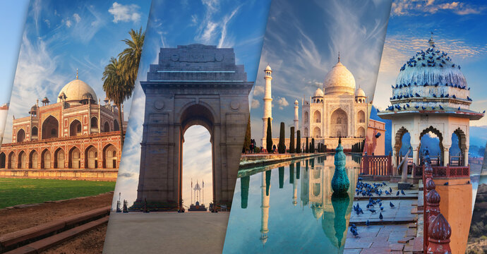

Tourism in India is a vibrant tapestry woven from its rich history, diverse cultures, and breathtaking landscapes. From the majestic Taj Mahal and the spiritual serenity of Varanasi to the lush backwaters of Kerala and the colorful markets of Jaipur, India offers a myriad of experiences for travelers. The country's vast geography encompasses the towering Himalayas, sprawling deserts, and idyllic coastal regions, catering to every type of adventurer. Additionally, India's festivals, culinary delights, and warm hospitality enhance its appeal, drawing millions of domestic and international tourists each year. Sustainable tourism initiatives are increasingly being adopted to preserve the environment and local cultures, ensuring that the beauty and heritage of India can be enjoyed for generations to come.
Tourism in Italy is a celebration of art, history, and culinary excellence, attracting millions of visitors annually. Renowned for its iconic landmarks, such as the Colosseum in Rome, the canals of Venice, and the Leaning Tower of Pisa, Italy offers a rich tapestry of experiences steeped in centuries of culture. Each region boasts unique traditions, from the Renaissance masterpieces in Florence to the stunning coastal beauty of the Amalfi Coast. Italian cuisine, with its regional variations, further enchants travelers, inviting them to savor everything from authentic pasta dishes to exquisite wines. Festivals, art exhibitions, and vibrant local markets add to the allure, making Italy a timeless destination that captivates the hearts of those who explore its picturesque landscapes and historic cities. With a growing emphasis on sustainable tourism, Italy is working to preserve its treasures while welcoming visitors to discover the country’s enchanting heritage.
Tourism in London is a dynamic blend of history, culture, and modernity, making it one of the world's most visited cities. From iconic landmarks like the Tower of London and Buckingham Palace to the vibrant atmosphere of Covent Garden and the historic streets of Soho, London offers an endless array of experiences. The city's world-class museums, such as the British Museum and the Tate Modern, house priceless collections, while the West End showcases some of the best theater productions globally. Culinary diversity is a hallmark of London, with options ranging from traditional British fare to global cuisines represented in its bustling markets and restaurants. With its rich history, diverse neighborhoods, and thriving arts scene, London not only attracts tourists but also provides a unique tapestry of experiences that reflect its status as a truly global city. Sustainable tourism initiatives are increasingly prominent, aiming to preserve the city's heritage while enhancing the visitor experience.

Tourism in Switzerland is characterized by its stunning natural landscapes, charming villages, and rich cultural heritage. Renowned for its majestic Alps, the country draws outdoor enthusiasts year-round, offering skiing, hiking, and breathtaking views. Iconic destinations like Zermatt, with its backdrop of the Matterhorn, and Interlaken, nestled between two lakes, showcase Switzerland's unparalleled beauty. Cities such as Zurich and Geneva blend cosmopolitan flair with historic architecture and vibrant arts scenes, featuring museums, galleries, and lively markets. The Swiss are also famous for their culinary delights, including fondue and chocolate, which add to the travel experience. With a strong emphasis on sustainability, Switzerland promotes eco-friendly tourism practices, ensuring that its pristine environment is preserved for future generations. This commitment, combined with its efficient transport system and welcoming atmosphere, makes Switzerland a premier destination for travelers seeking both adventure and tranquility.
Tourism in the USA is a diverse and expansive experience, offering something for every type of traveler. From the iconic skyline of New York City and the stunning natural wonders of the Grand Canyon to the entertainment hubs of Las Vegas and the historical richness of Washington, D.C., the country is a mosaic of cultures and landscapes. National parks like Yellowstone and Yosemite showcase breathtaking scenery and wildlife, while vibrant cities like Chicago and San Francisco provide rich culinary and artistic experiences. The USA also hosts a variety of festivals and events, celebrating everything from music and film to food and art, reflecting its cultural diversity. With a well-developed infrastructure, travelers can easily explore the vast array of attractions, whether by road, rail, or air. Additionally, sustainable tourism initiatives are gaining traction, encouraging responsible travel that preserves the nation's natural and cultural treasures. Overall, the USA remains a top destination, drawing millions who seek adventure, relaxation, and exploration.
Tourism in Germany offers a captivating blend of history, culture, and natural beauty, making it a popular destination for travelers from around the globe. From the fairytale castles of Bavaria, such as Neuschwanstein, to the vibrant streets of Berlin, rich with history and modern art, the country showcases a diverse array of experiences. Iconic landmarks, including the Brandenburg Gate and the remnants of the Berlin Wall, tell stories of Germany's complex past, while picturesque towns like Rothenburg ob der Tauber and Heidelberg charm visitors with their medieval architecture. Germany is also known for its famous festivals, such as Oktoberfest in Munich and the Christmas markets held across the country, which celebrate its cultural heritage. Additionally, the scenic Rhine River and the Black Forest offer stunning landscapes for outdoor enthusiasts. With a commitment to sustainable tourism and efficient public transport, Germany continues to attract millions of visitors eager to explore its unique offerings and vibrant culture.